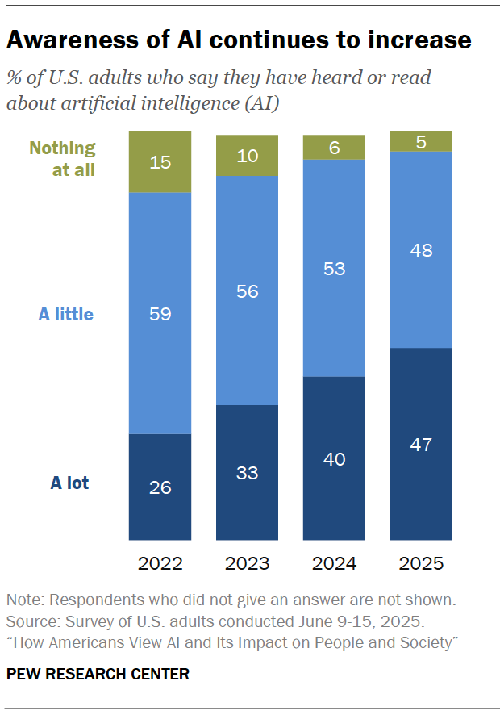
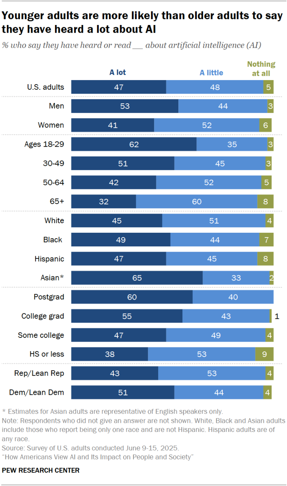

A free introductory course
AI Literacy 101: Understanding AI
“95% of U.S. adults have heard at least a little about artificial intelligence. Still, 73% say they’d be willing to let AI assist them at least a little with day to day activities” (Pew Research Center)About the course ↓


Hearing about AI is not the same as understanding it. Many people fear AI because they know very little about what it can actually do today, or about how far its knowledge and abilities could eventually reach. When the ceiling is unknown, it is easy to imagine the worst.
About the Course / Why AI Literacy?
What is AI Literacy?
AI is everywhere around us now, from the apps on your phone, many websites that you use everyday, and the tools that your teachers may use to complete tasks more efficiently. This can be amazing but many people have seemed to never learn a basic understanding of AI and its capabilities. That gap is shown in a June 2025 Pew Research Center survey where 50% of Americans said that they are more concerned than excited about the increased usage of AI and the advancements that it has made. People are also unprepared for the quick advancement of AI, 76% of people say that it is extremely or very important to be able to tell if pictures, videos, or text is AI generated or not. Along with this, 53% of Americans say that they are not confident that they are able to differentiate whether the information that they are digesting is AI generated or not.
The main problem that is being observed is that many people don’t understand AI and its capabilities which often pushes them to one side of the two extremes. People either completely avoid AI because they are afraid of it while the other group of people blindly follow and trust everything that AI produces. Both groups of people come from the same lack of understanding of AI and how to properly utilize it. AI literacy 101 was created to help close that gap, so that people can become more informed and make their own decision instead of reacting off of fear or hype.
Who this Course is for
This course is meant for anyone who feels nervous about the presence of AI, those who are confused, students, parents, and those within the professional field wanting to expand their understanding of AI. This course requires no practical background in IT or AI.
By the end of the course, you’ll be able to:
- Explain how LLM’s generate its answers
- Recognize common mistakes
- Separate realistic concerns about AI and the myths
- Use AI responsibly in your line of profession or academia
- Make informed decisions about when to use AI
Works Cited
Kennedy, Brian, et al. “AI in Americans’ Lives: Awareness, Experiences and Attitudes.” Pew Research Center, 17 Sept. 2025, www.pewresearch.org/science/2025/09/17/ai-in-americans-lives-awareness-experiences-and-attitudes/.
---. “How Americans View AI and Its Impact on People and Society.” Pew Research Center, 17 Sept. 2025, www.pewresearch.org/science/2025/09/17/how-americans-view-ai-and-its-impact-on-people-and-society/.